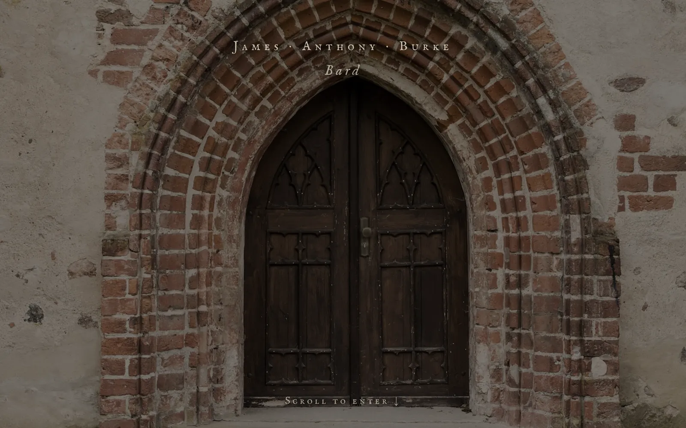
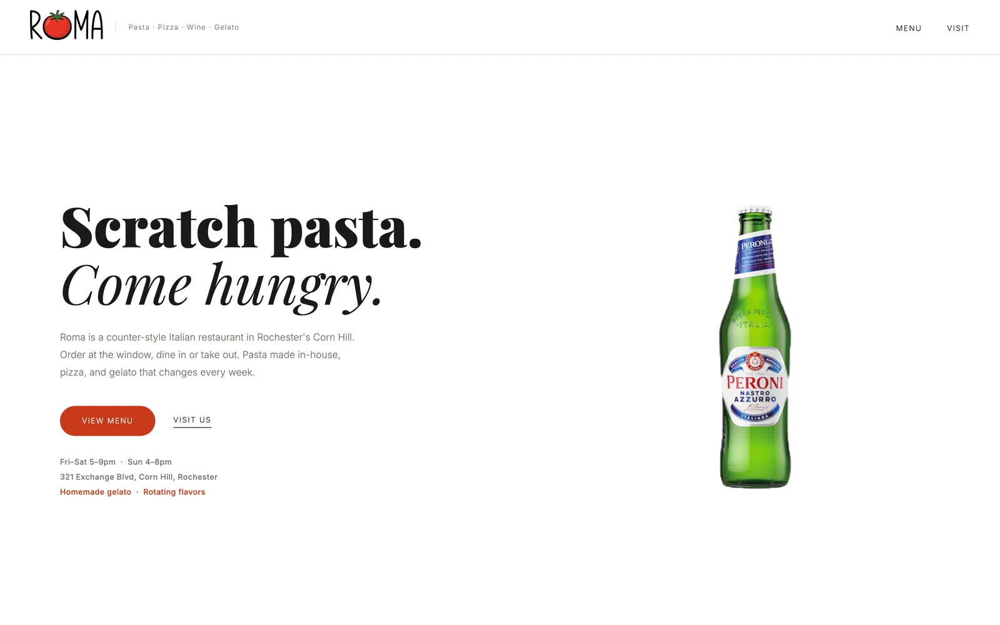

Web Design
I build websites the way I cut film: find the story first, then let it decide everything else. Each of these started with a conversation about what the person does and why. The words, the colors, the wordmark, and the pace of the page all came out of that conversation.

James Anthony Burke
A musician and writer who calls himself a bard, so his site is a hall. You enter through a door and five flames burn inside.
Read more about the siteHogan CPA Firm
A CPA is chosen on trust, and the mark of trust is a signature. Sarah's draws itself across the screen and becomes the logo.
Read more about the site
Roma
A counter-style pasta shop in Corn Hill that does not fuss. Four words, the hours, and the whole menu on the page.
Read more about the site